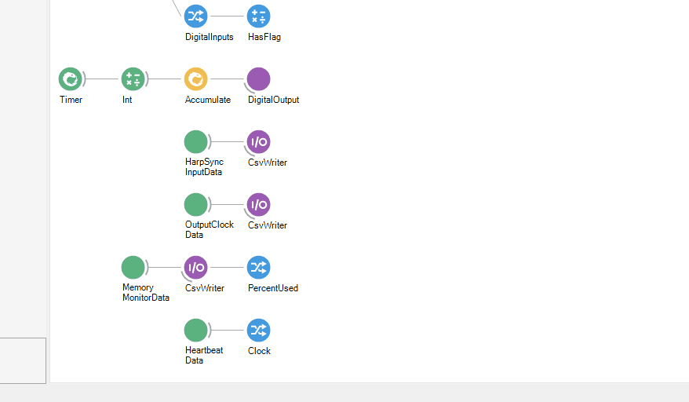

Breakout Board Analog IO
The following excerpt from the Breakout Board example workflow demonstrates analog IO functionality by computing a ~1Hz sawtooth pattern, outputting it to the analog IO port, and reading it back from the analog IO port. It also saves analog input data.
Analog outputs
The RampGenerator operator generates a sequence of single precision floating point values which
comprises ~1Hz sawtooth waveform from -10 to 10. The AnalogOutput updates the
analog output port upon receiving a value in the upstream sequence. In the Breakout Board example
workflow:
- The
AnalogOutput'sDeviceNameproperty is set to "BreakoutBoard/AnalogIO". This links theAnalogOutputoperator to the corresponding configuration operator. - The
AnalogOutput'sDataTypeproperty is set to "Volts". TheRampGeneratoroperator computes a sawtooth pattern that consists floats in units of volts, soAnalogOutputmust be set to "Volts" to accept this input. Of course, theRampGeneratorcould be used to produce a sequence of signed 16-bit DAC codes. In that case,DataTypeproperty would be set to "S16".
Although a voltage ramp is sent to all the channels, only channel 0 was selected to be a output, so
this is the only channel that will be affected. If other channels are configured as output (see
Breakout Board Configuration), they will also ramp their voltage. The RampGenerator is a
GroupWorkflow that contains multiple
Bonsai operators. Examine RampGenerator's internals by pressing Ctrl + Enter
when the node is selected:
Tip
To understand how the RampGenerator works, double click each
nodes in the workflow while its running to visualize how data is transformed
as it flows through each operator. Additionally, the
AnalogOutput
operator to update the analog IO port. 12 signals are produced, one for each
channel. However, only analog channel 0 is actually updated because it's
the only channel configured as output by the BreakoutBoard
operator. The "AnalogData" window shows the voltages at the various pins of
the analog IO port. They are being read by the the ADCs on the breakout
board and produced in Bonsai by the AnalogInput operator. This
confirms that only analog channel 0 is outputting the sawtooth waveform.
Analog inputs
Analog input data is recorded from all analog IO channels, regardless of each channels'
AnalogIO setting. Because analog inputs and outputs share pins on the breakout board,
this enables a loopback of signals from the analog output through the analog input so that a copy of
the output signal being sent to external hardware can be saved automatically. The example workflow
does exactly this on analog IO channel 0.
The AnalogInput operator receives a sequence of AnalogInputDataFrames. In the Breakout Board example workflow:
- The
AnalogInput'sDeviceNameis set to "BreakoutBoard/AnalogIO". This links theAnalogInputoperator to the corresponding configuration operator. - The
AnalogInput'sBufferSizeis set to 50. Therefore, each frame will contain a 50-elementClockvector and a 12-channel x 50-sampleAnalogDatamatrix. The analog inputs are sampled at 100 kHz per channel so this corresponds to 500 µs of data. That's lower than the minimal latency introduced by theBlockReadSizesetting. Therefore, the chosen value forBufferSizewill not impose a significant effect on processing latency. The buffer will be filled essentially every time hardware is accessed and propagated instantly. - The
AnalogInput'sDataTypeis set toVolts. This means that samples will be represented as units of units of voltage in a single-precision floating point type.
The MemberSelector
operators each select a member from the AnalogInputDataFrame, Clock and AnalogData which
contain the AcquisitionClockHz-based sample times and sample
values, respectively. The
MatrixWriter operators saves the
selected members to files with the following format: analog-clock_<timestamp>.raw and
analog-data_<timestamp>.raw, respectively.
Tip
The easiest way to add a
MemberSelector to
the output of an operator is to right-click the node and hover over Output in the resulting
context menu to examine the output type. A MemberSelector can be added by
left-clicking the desired expanded property of the Output type.
